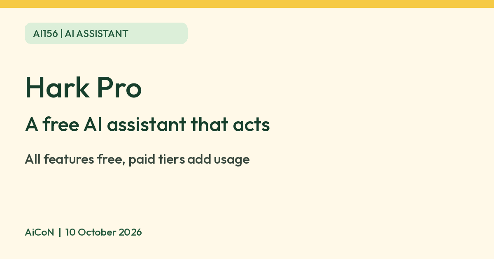

Hark Pro: a free AI assistant that can act for you, with limits to know
Hark Pro is a new AI assistant app that can sign in to sites and do errands for you. Hark says every feature is free and paid plans only add usage. Check payments before you approve them.

What it is
Hark Pro is a new AI assistant app for iPhone, Android and the web. Hark describes it as "the operating system for your life". It remembers what you tell it and can use its own cloud computer, which Hark calls Handoff, to sign in to websites and do things such as order groceries, manage a calendar or book flights.
Is it free
Yes. Hark says the full feature set is free, and that paid tiers only add usage: $20 a month for 2x more usage and $100 a month for 10x more. That is approximately ₹1,940 and ₹9,680 per month at ₹96.79 per US dollar. These are currency conversions, not verified Indian web checkout prices; taxes and card fees may differ. Hark does not say what the free usage limit is, so heavy users may hit it. The India App Store page lists Hark Pro as Free with in-app purchases: Pro² ₹2,499, Pro³ ₹12,900 and Pro⁴ ₹19,900. The listing does not state their billing periods. Check the plan, renewal period and final price in the app before subscribing.
Is it available in India
Hark says it is available "to everyone" on iOS, Android and web. The app has a live India App Store listing and requires iOS 17.6 or later. Hark does not publish a country list, and we did not test it.
How to try it
- Install Hark Pro from the App Store or Google Play, or open it on the web.
- Start with a small, harmless request, such as a reminder or a plan for the week.
- Connect email or calendar only if you are comfortable with it. Hark says it asks for your email so it can see your schedule and send messages.
Limits to know
- This is an assistant that can act for you. It can log in to sites and pay. Hark says it stores passwords and cards in an encrypted vault it calls Secured by Hark, and that it cannot view them. Think before you add a card or a login.
- Check any order, payment or booking before it goes through. Hark says its Action Buttons let you approve things like paying a bill with a tap.
- Hark says it never sells your data or shares it with advertisers. That does not mean it collects no data. Its privacy policy covers chats, memory, connected-account information and task logs, and allows sharing with service providers and the services needed to do your tasks. It says this data is not used to train AI models. Data may be transferred outside India. These are policy claims, not an independent security audit.
- The App Store lists age 18+.
- The free usage limit is not published.
- Auto top-up can replenish paid credits after you activate it. Check the amount and ceiling before enabling it.
- We did not test it ourselves.
Frequently asked questions
Do I need to pay?
No. Hark says all features are free. Paying only raises the usage limit.
Sources: Hark pricing, Using Hark Pro, Introducing Hark Pro, India App Store listing, Hark privacy policy, USD/INR conversion reference. Checked 10 October 2026.